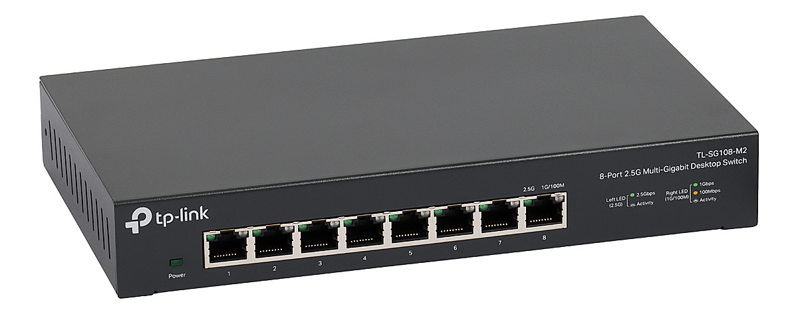
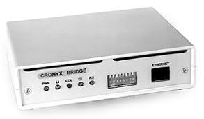

Router
(ruter, w dosłownym tłumaczeniu – trasownik, pol. wym. ['rutɛr]) – urządzeniesieciowe działające w trzeciej warstwie modelu OSI. Służy do łączenia różnych sieci
komputerowych (różnych w sensie informatycznym, czyli np. o różnych klasach, maskach itd.),
pełni więc rolę węzła komunikacyjnego.

sieć lokalną (LAN), pozwalając im na wydajną wymianę danych. Działa inteligentnie, przekazując ramki
danych (pakiety) bezpośrednio do właściwego portu docelowego, zamiast wysyłać je do wszystkich portów
jednocześnie, co odróżnia go od starszych koncentratorów (hubów) i zapewnia większą prędkość oraz
bezpieczeństwo sieci.
Przełącznik
(ang. switch) to urządzenie sieciowe łączące komputery, drukarki i inne sprzęty w jednąsieć lokalną (LAN), pozwalając im na wydajną wymianę danych. Działa inteligentnie, przekazując ramki
danych (pakiety) bezpośrednio do właściwego portu docelowego, zamiast wysyłać je do wszystkich portów
jednocześnie, co odróżnia go od starszych koncentratorów (hubów) i zapewnia większą prędkość oraz
bezpieczeństwo sieci.

Access Point (AP)
urządzenie zapewniające hostom dostęp do sieci komputerowej zapomocą bezprzewodowego nośnika transmisyjnego, jakim są fale radiowe. Punkt dostępowy
jest zazwyczaj mostem łączącym bezprzewodową sieć lokalną (WLAN) z siecią lokalną (LAN).

umożliwiając wymianę danych pomiędzy nimi na poziomie warstwy łącza danych (warstwa 2 modelu OSI).
Działa, analizując adresy fizyczne (MAC) ramek danych i przekazując je tylko do odpowiedniego portu,
tworząc w ten sposób jedną, zagregowaną sieć. Bridge'e mogą łączyć sieci o różnej topologii czy
protokołach fizycznych, a ich funkcjonalność jest często rozszerzona w nowoczesnych przełącznikach.
Bridge
(most sieciowy) to urządzenie sieciowe łączące dwa lub więcej segmentów sieci,umożliwiając wymianę danych pomiędzy nimi na poziomie warstwy łącza danych (warstwa 2 modelu OSI).
Działa, analizując adresy fizyczne (MAC) ramek danych i przekazując je tylko do odpowiedniego portu,
tworząc w ten sposób jedną, zagregowaną sieć. Bridge'e mogą łączyć sieci o różnej topologii czy
protokołach fizycznych, a ich funkcjonalność jest często rozszerzona w nowoczesnych przełącznikach.